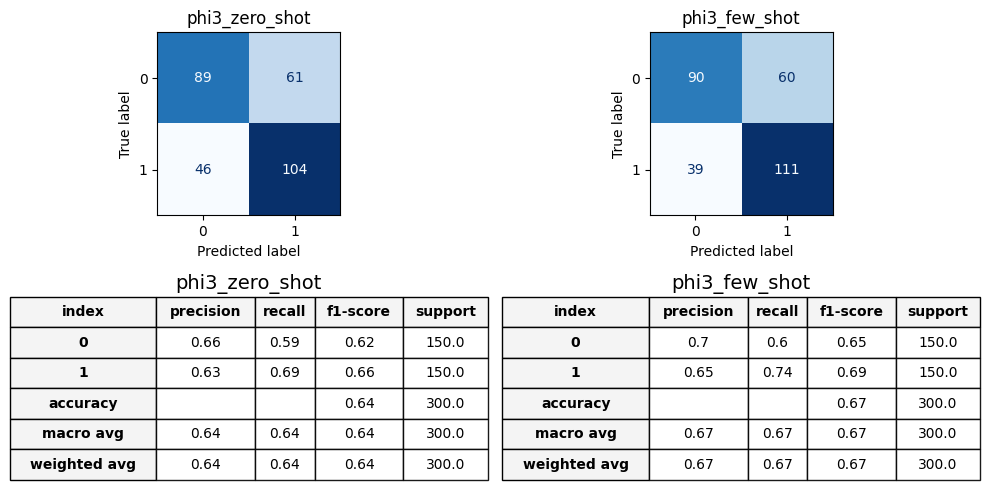
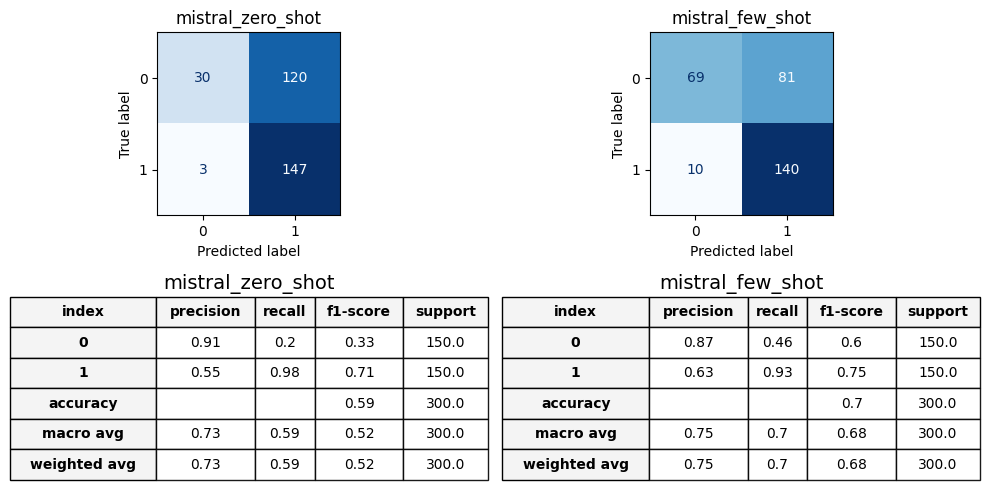

Many of these open-source LLMs require you to accept their “Community License Agreement” to download them.
In summary:
If not already, create an account of Huggingface (~2 mins)
Check a LLM model card page (e.g., Mistral v3) and accept its “Community License Agreement”.
Go to your account -> Settings -> Access Tokens -> Create new token -> “Repositories permissions” -> add the LLM model card you want to use.
Save the token (we’ll need it later)
Huggingface Login
Once we have created an account and an access token, we need to login to Huggingface via code.
Type your token and press Enter
You can say No to Github linking
!huggingface-cli login
The token has not been saved to the git credentials helper. Pass `add_to_git_credential=True` in this function directly or `--add-to-git-credential` if using via `huggingface-cli` if you want to set the git credential as well.
Token is valid (permission: fineGrained).
The token `nlp_assignment2` has been saved to /root/.cache/huggingface/stored_tokens
Your token has been saved to /root/.cache/huggingface/token
Login successful.
The current active token is: `nlp_assignment2`
After login, you can download all models associated with your access token in addition to those that are not protected by an access token.
Data Loading
Since we are only interested in prompting, we do not require a train dataset.
We have preparared a small test set version of EDOS in our dedicated Github repository.
Check the Assignment 2/data folder.
It contains:
a2_test.csv → a small test set of 300 samples.
demonstrations.csv -> a batch of 1000 samples for few-shot prompting.
Both datasets contain a balanced number of sexist and not sexist samples.
[nltk_data] Downloading package punkt_tab to /usr/share/nltk_data...
[nltk_data] Unzipping tokenizers/punkt_tab.zip.
[nltk_data] Downloading package wordnet to /usr/share/nltk_data...
[nltk_data] Package wordnet is already up-to-date!
[nltk_data] Downloading package averaged_perceptron_tagger_eng to
[nltk_data] /usr/share/nltk_data...
[nltk_data] Unzipping taggers/averaged_perceptron_tagger_eng.zip.
[nltk_data] Downloading package stopwords to /usr/share/nltk_data...
[nltk_data] Package stopwords is already up-to-date!
True
def set_reproducibility(seed : int) ->None:""" Sets a reproducible environment Input: seed: an integer used as seed """ random.seed(seed) np.random.seed(seed) torch.manual_seed(seed) torch.random.manual_seed(seed)if torch.cuda.is_available(): torch.cuda.manual_seed(seed) torch.cuda.manual_seed_all(seed)# Ensure reproducibility for PyTorch torch.backends.cudnn.deterministic =True torch.backends.cudnn.benchmark =Falseset_reproducibility(seed=42)
class DownloadProgressBar(tqdm):def update_to(self, b=1, bsize=1, tsize=None):if tsize isnotNone:self.total = tsizeself.update(b * bsize -self.n)def download_dataset(url: str, file_name: str, directory: str) ->None:""" Download and store a file inside the directory Input: url: the url of the file to download file_name: the name to save the file with directory: the name in which save the file """ local_file_path = os.path.join(directory, file_name)print("Downloading dataset...")with DownloadProgressBar(unit='B', unit_scale=True, miniters=1, desc=url.split('/')[-1]) as t: response = requests.get(url)print("Download complete!")print(f"Saving the Dataset {file_name}.csv into local environment...")if response.status_code ==200:withopen(local_file_path, 'wb') asfile:file.write(response.content)print(f"File saved successfully")else:print(f"Failed to download the file. Status code: {response.status_code}")
We downloaded the files a2_test.csv and demonstration.csv inside the new dirctory Dataset.
url ="https://raw.githubusercontent.com/nlp-unibo/nlp-course-material/main/2024-2025/Assignment%202/data/"directory ='Dataset'print(f"Creating the directory {directory}...")ifnot os.path.exists(directory): os.makedirs(directory)file_name = ['a2_test', 'demonstrations']directory ='Dataset'for name in file_name: download_dataset(url+name+'.csv', name, directory)
Creating the directory Dataset...
Downloading dataset...
a2_test.csv: 0.00B [00:00, ?B/s]
Download complete!
Saving the Dataset a2_test.csv into local environment...
File saved successfully
Downloading dataset...
demonstrations.csv: 0.00B [00:00, ?B/s]
Download complete!
Saving the Dataset demonstrations.csv into local environment...
File saved successfully
We stored the file a2_test.csv in the variable a2_test mapping the target feature from categorical to numerical.
def get_model(model_card : str) ->tuple:""" Download the model and its tokenizer from Hugging Face and set the configuratons Input: model_card: name of the model to dowload Output: model: the downloaded model tokenizer: the tokenizer associated with the model """ tokenizer = AutoTokenizer.from_pretrained(model_card) tokenizer.pad_token = tokenizer.eos_token model = AutoModelForCausalLM.from_pretrained( model_card, return_dict=True, quantization_config=bnb_config, device_map='auto' ) generation_config = model.generation_config generation_config.max_new_tokens =100 generation_config.eos_token_id = tokenizer.eos_token_id generation_config.pad_token_id = tokenizer.eos_token_id generation_config.temperature =None generation_config.num_return_sequences =1return model, tokenizer
We decide to use Phi3-mini, a model with 3.8 billions parameters developed by Microsoft.
Prompting requires an input pre-processing phase where we convert each input example into a specific instruction prompt.
Prompt Template
Use the following prompt template to process input texts.
zero_shot_prompt = [ {'role': 'system','content': 'You are an annotator for sexism detection.' }, {'role': 'user','content': """Your task is to classify input text as containing sexism or not. Respond only YES or NO. TEXT:{text} ANSWER: """ }]
Instructions
In order to get Task 2 points, we require you to:
Write a prepare_prompts function as the one reported below.
def prepare_prompts(texts: Dataset, prompt_template: list, tokenizer: transformers.AutoTokenizer) -> DataLoader:""" Formats input text samples into instructions prompts. Inputs: texts: input texts to classify via prompting prompt_template: the prompt template provided in this assignment tokenizer: the transformers Tokenizer object instance associated with the chosen model card Outputs: input texts to classify in the form of instruction prompts """def collate_fn(batch): texts = tokenizer.batch_encode_plus([it['text'] for it in batch], return_tensors='pt', padding=True, truncation=True) sentiment = torch.tensor([it['label_sexist'] for it in batch])return texts, sentimentdef format_text(text): prompt = tokenizer.apply_chat_template(prompt_template, tokenize=False, add_generation_prompt=True) text['text'] = prompt.format(text=text['text'])return text zero_shot_data = texts.map(lambda x: format_text(x)) zero_shot_data = zero_shot_data.select_columns(['text', 'label_sexist'])print(zero_shot_data['text'][0]) data_loader = DataLoader(zero_shot_data, batch_size=1, shuffle=False, collate_fn=collate_fn)return data_loader
<|system|>
You are an annotator for sexism detection.<|end|>
<|user|>
Your task is to classify input text as containing sexism or not. Respond only YES or NO.
TEXT:
The boys must be gaming because there goes the wifi.
ANSWER:
<|end|>
<|assistant|>
Notes
You are free to modify the prompt format (not its content) as you like depending on your code implementation.
Note that the provided prompt has placeholders. You need to format the string to replace placeholders. Huggingface might have dedicated APIs for this.
[Task 3 - 1.0 points] Inference
We are now ready to define the inference loop where we prompt the model with each pre-processed sample.
Instructions
In order to get Task 3 points, we require you to:
Write a generate_responses function as the one reported below.
Write a process_response function as the one reported below.
def generate_responses(model: transformers.AutoModel, prompt_examples: DataLoader) ->list:""" This function implements the inference loop for a LLM model. Given a set of examples, the model is tasked to generate a response. Inputs: model: LLM model instance for prompting prompt_examples: pre-processed text samples Outputs: generated responses """ model_responses = []with torch.inference_mode():for batch_x, batch_y in tqdm(prompt_examples, desc="Generating responses"): response = model.generate( input_ids=batch_x['input_ids'].to(model.device), attention_mask=batch_x['attention_mask'].to(model.device), generation_config=model.generation_config, do_sample=False, use_cache=True ) model_responses.extend(response)return model_responses
def process_response(response: str) ->int:""" This function takes a textual response generated by the LLM and processes it to map the response to a binary label. Inputs: response: generated response from LLM Outputs: parsed binary response: return 1 if YES and 0 if NO """return1if response.split()[0] =='YES'else0
def extract_response(response: str) ->str:""" Extracts the answer of the model. Input: respose: the whole prompt given by the model """ match = [m for m in re.finditer(f'ANSWER:', response)][-1] parsed = response[match.end():].strip()return parsed
According to our tests, it should take you ~10 mins to perform full inference on 300 samples.
[Task 4 - 0.5 points] Metrics
In order to evaluate selected LLMs, we need to compute performance metrics.
In particular, we are interested in computing accuracy since the provided data is balanced with respect to classification classes.
Moreover, we want to compute the ratio of failed responses generated by models.
That is, how frequent the LLM fails to follow instructions and provides incorrect responses that do not address the classification task.
We denote this metric as fail-ratio.
In summary, we parse generated responses as follows:
1 if the model says YES
0 if the model says NO
0 if the model does not answer in either way
Instructions
In order to get Task 4 points, we require you to:
Write a compute_metrics function as the one reported below.
Compute metrics for the two selected LLMs.
We considered wrong answers all those who do not contain either yes or no (case unsensitive) in the answer; an answer of the form: yes (or no) + explanation will be considered corrected. This allowed us to define the fail ratio as the ratio of the wrong answers.
def fail_ratio(textual_response : list) ->float:""" Computes the fail-ratio metrics Input: textual_response: the responses generated by the model Output: fail_ratio: the fail ratio metrics """ wrong_answer = [answer for answer in textual_response if ('YES'notin answer.upper() and'NO'notin answer.upper())] n_wrong =len(wrong_answer) n_total =len(textual_response) fail_ratio = n_wrong/n_totalreturn fail_ratio
def compute_metrics(responses: np.ndarray, y_true: np.ndarray) ->dict:""" This function takes predicted and ground-truth labels and compute metrics. In particular, this function computes accuracy and fail-ratio metrics. This function internally invokes `process_response` to compute metrics. Inputs: responses: generated LLM responses y_true: ground-truth binary labels Outputs: dictionary containing desired metrics """ fail = fail_ratio(responses) binary_prediction = [process_response(item) for item in responses] predictions = np.array(binary_prediction) acc = accuracy_score(y_pred=predictions, y_true=y_true) cm = confusion_matrix(y_pred=predictions, y_true=y_true) cr = classification_report(y_pred=predictions, y_true=y_true, output_dict =True)return {'fail_ratio' : fail, 'accuracy_score' : acc, 'cr': cr, 'cm': cm}
So far, we have tested models in a zero-shot fashion: we provide the input text to classify and instruct the model to generate a response.
We are now interested in performing few-shot prompting to see the impact of providing demonstration examples.
To do so, we slightly change the prompt template as follows.
few_shot_prompt = [ {'role': 'system','content': 'You are an annotator for sexism detection.' }, {'role': 'user','content': """Your task is to classify input text as containing sexism or not. Respond only YES or NO. EXAMPLES:{examples} TEXT:{text} ANSWER: """ }]
The new prompt template reports some demonstration examples to instruct the model.
Generally, we provide an equal number of demonstrations per class as shown in the example below.
prompt = [ {'role': 'system','content': 'You are an annotator for sexism detection.' }, {'role': 'user','content': """Your task is to classify input text as containing sexism or not. Respond only YES or NO. EXAMPLES: TEXT: **example 1** ANSWER: YES TEXT: **example 2** ANSWER: NO TEXT:{text} ANSWER: """ }]
Instructions
In order to get Task 5 points, we require you to:
Load demonstrations.csv and encode it into a pandas.DataFrame object.
Define a build_few_shot_demonstrations function as the one reported below.
Perform few-shot inference as in Task 3.
Compute metrics as in Task 4.
Load demonstrations.csv and encode it into a pandas.DataFrame object, mapping the taget feature in YES and NO.
Define a build_few_shot_demonstrations function as the one reported below
def build_few_shot_demonstrations(demonstrations: pd.DataFrame, num_per_class: int=2) ->str:""" This function extracts random examples from the demonstrations. Inputs: demonstrations: the pandas.DataFrame object wrapping demonstrations.csv num_per_class: number of demonstrations per class Outputs: a string of textual demonstrations to inject into the prompt template. """ demonstration_list = []for i inrange(num_per_class): demonstration_list.append((demonstrations[demonstrations['label_sexist'] =='YES'].sample(1, axis =0)['text'].values[0], 'YES')) demonstration_list.append((demonstrations[demonstrations['label_sexist'] =='NO'].sample(1, axis =0)['text'].values[0], 'NO')) demonstration_samples ='\n'.join([f'TEXT: {text}\nANSWER: {answer}'for (text, answer) in demonstration_list])return demonstration_samples
def prepare_prompts_few_shot(texts: Dataset, prompt_template: list, tokenizer: transformers.AutoTokenizer, demonstration_samples: Optional[str] =None, num_per_class: int=2) -> DataLoader:""" This function formats input text samples into instructions prompts with examples. Inputs: texts: input texts to classify via prompting prompt_template: the prompt template provided in this assignment tokenizer: the transformers Tokenizer object instance associated with the chosen model card demonstration_samples: the examples used to format the prompt Outputs: input texts to classify in the form of instruction prompts """def format_text(text): prompt = tokenizer.apply_chat_template(prompt_template, tokenize=False, add_generation_prompt=True)if demonstration_samples isNone: text['text'] = prompt.format(text=text['text'], examples= build_few_shot_demonstrations(demonstrations, num_per_class = num_per_class))else: text['text'] = prompt.format(text=text['text'], examples= demonstration_samples)return textdef collate_fn(batch): texts = tokenizer.batch_encode_plus([it['text'] for it in batch], return_tensors='pt', padding=True, truncation=True) sentiment = torch.tensor([it['label_sexist'] for it in batch])return texts, sentiment few_shot_data = texts.map(lambda x: format_text(x)) few_shot_data = few_shot_data.select_columns(['text', 'label_sexist'])print(few_shot_data['text'][0]) data_loader = DataLoader(few_shot_data, batch_size=1, shuffle=False, collate_fn=collate_fn)return data_loader
To ensure reproducibility and a fair comparison between the models, we limited the demonstrations to two examples per class, randomly extracted from the demonstrations file. All prompt templates are then formatted using the extracted sentences from the dataset and the same fixed set of demonstrations for consistency across all experiments.
TEXT: nothing irks a left wing feminist worse than seeing a beautiful virtuous woman who is conservative they HATE her H-A-T-E so they try to suppress her next it will be illegal to be born beautiful they'll call it "Hate Birth"
ANSWER: YES
TEXT: Reposting this since all the mailboxes were full over the weekend. Please everybody call! #ReleaseTheMemo
ANSWER: NO
TEXT: It's not old. The women that are 35+ are far more mature, know what they want, and go for it. They don't play the same games and I appreciate them far more for it. Also, they fuck you so much better... no joke.
ANSWER: YES
TEXT: Greece, African and moslems first stop to the UK.
ANSWER: NO
<|system|>
You are an annotator for sexism detection.<|end|>
<|user|>
Your task is to classify input text as containing sexism or not. Respond only YES or NO.
EXAMPLES:
TEXT: nothing irks a left wing feminist worse than seeing a beautiful virtuous woman who is conservative they HATE her H-A-T-E so they try to suppress her next it will be illegal to be born beautiful they'll call it "Hate Birth"
ANSWER: YES
TEXT: Reposting this since all the mailboxes were full over the weekend. Please everybody call! #ReleaseTheMemo
ANSWER: NO
TEXT: It's not old. The women that are 35+ are far more mature, know what they want, and go for it. They don't play the same games and I appreciate them far more for it. Also, they fuck you so much better... no joke.
ANSWER: YES
TEXT: Greece, African and moslems first stop to the UK.
ANSWER: NO
TEXT:
The boys must be gaming because there goes the wifi.
ANSWER:
<|end|>
<|assistant|>
<s>[INST] You are an annotator for sexism detection.
Your task is to classify input text as containing sexism or not. Respond only YES or NO.
TEXT:
The boys must be gaming because there goes the wifi.
ANSWER:
[/INST]
Generating responses: 0%| | 0/300 [00:00<?, ?it/s]Asking to truncate to max_length but no maximum length is provided and the model has no predefined maximum length. Default to no truncation.
Generating responses: 100%|██████████| 300/300 [03:55<00:00, 1.28it/s]
response = tokenizer_2.batch_decode(mistral_pred_zs, skip_special_tokens=True)raw_response = np.array([extract_response(item) for item in response])responses_df['mistral_zero_shot'] = raw_response
<s>[INST] You are an annotator for sexism detection.
Your task is to classify input text as containing sexism or not. Respond only YES or NO.
EXAMPLES:
TEXT: nothing irks a left wing feminist worse than seeing a beautiful virtuous woman who is conservative they HATE her H-A-T-E so they try to suppress her next it will be illegal to be born beautiful they'll call it "Hate Birth"
ANSWER: YES
TEXT: Reposting this since all the mailboxes were full over the weekend. Please everybody call! #ReleaseTheMemo
ANSWER: NO
TEXT: It's not old. The women that are 35+ are far more mature, know what they want, and go for it. They don't play the same games and I appreciate them far more for it. Also, they fuck you so much better... no joke.
ANSWER: YES
TEXT: Greece, African and moslems first stop to the UK.
ANSWER: NO
TEXT:
The boys must be gaming because there goes the wifi.
ANSWER:
[/INST]
mistral_pred_fs = generate_responses(model_2, data_loader_fs)response = tokenizer_2.batch_decode(mistral_pred_fs, skip_special_tokens=True)raw_response = np.array([extract_response(item) for item in response])responses_df['mistral_few_shot'] = raw_response
We are now interested in evaluating model responses and comparing their performance.
This analysis helps us in understanding
Classification task performance gap: are the models good at this task?
Generation quality: which kind of responses do models generate?
Errors: which kind of mistakes do models do?
Instructions
In order to get Task 6 points, we require you to:
Compare classification performance of selected LLMs in a Table.
Compute confusion matrices for selected LLMs.
Briefly summarize your observations on generated responses.
Model performances
Let’s explore the Confusion Matrix and Classification Reports of the models to analyse the errors.
def plot_results(model_name : str, metrics : dict) ->None:""" This function plots the confusion matrix and classification report of the desired model for both the zero shot and few shot Input model_name: the name of the model to plot the metrics of metrics: a dictionary containing the computed metrics """ fig, axs = plt.subplots(2,2, figsize=(10, 5)) keys = [key for key in metrics.keys() if model_name in key]for idx, key inenumerate(keys): cm = metrics[key]['cm'] disp = ConfusionMatrixDisplay(cm) axs[0][idx].set_title(key) disp.plot(ax=axs[0][idx], colorbar=False, cmap='Blues') cr = metrics[key]['cr'] report_df = pd.DataFrame(cr).T report_df.iloc[:, :-1] = report_df.iloc[:, :-1].round(2) report_df.loc["accuracy", ["precision", "recall"]] =None report_df.loc["accuracy", "support"] =300# Create a styled table axs[1][idx].axis("off") table_data = report_df.reset_index() table = axs[1][idx].table(cellText=table_data.values, colLabels=table_data.columns, cellLoc="center", loc="center", bbox=[0, 0, 1, 1])# Style the table table.auto_set_font_size(False) table.set_fontsize(10) table.auto_set_column_width(col=list(range(len(table_data.columns))))# Apply styles to headers and rowsfor (row, col), cell in table.get_celld().items(): cell.set_edgecolor("black")if row ==0: cell.set_text_props(weight="bold") cell.set_facecolor("#f4f4f4")elif col ==0: cell.set_text_props(weight="bold") cell.set_facecolor("#f4f4f4")else: value = table_data.values[row -1, col] if row >0else table_data.columns[col] # Adjust index for headerif pd.isna(value): cell.get_text().set_text("") cell.set_facecolor("white") cell.set_alpha(0.9) axs[1][idx].set_title(key, fontsize=14) plt.tight_layout() plt.show()
Observing Phi3 confusion matrix and classification report we can note that: - the error are quite balanced in both the zero shot and few shot between the sexist and non sexist label; this is confirmed also by the classification report, indeed the precision and recall on zero shot are basically equal, this is positive since the models seems to not present strong imbalances. - from the accuracy score we can see that the perfomances slightly increase in the few shot, this was expected since providing demonstration should help the model to better classify sentences. Diving deeper we can notice that only 6 sentences more are correctly classified in few shot, with respect to zero shot and all of them are from the label 1. This lead to different values in precision and recall and it could imply that the demonstration sentences, taken randomly, only help the model to understand sexism.
plot_results('phi', metrics)

Observing Mistral v0.3 confusion matrix and classification report we can note that: - The errors are highly imbalanced in the zero shot, indeed the model almost predicts all the sentences as sexist. Precision and recall are completely different on label 0, highlighting the fact that almost all sentences have been wrongly classified. In fact, the accuracy is slightly better than the one of the random classifier (0.59). - In few-shot, the performance improves, reaching 0.7 accuracy. This improvement highlights, even more than Phi3, the importance of the examples provided. However, the model remains strongly imbalanced in its predictions, with 81 of the total errors made on label 1. Additionally, we observe a slight decrease in Mistral’s performance on label 1 in few-shot, with the model misclassifying 7 more sentences compared to zero-shot
plot_results('mistral', metrics)

After analyzing the performance of each model individually, let’s now compare them by focusing on the key metrics.
def show_performances_table(metrics : dict, save_file : bool=False, file_name : str=None) ->None:""" Shows in table format the metrics contained in the metrics_dict and saved them as a tex table whether required Input metrics: dictionary containing the metrics to show in table format save_file: boolean attribute, specify whther the table will be saved in your local environment file_name: the name of the file to be saved with """if save_file and file_name isNone:raiseValueError("file_name must be specified if save_file is setted to True") performances = {'accuracy_score':[], 'fail_ratio':[], 'f1-score':[]}for key in metrics.keys(): performances['accuracy_score'].append(metrics[key]['accuracy_score']) performances['fail_ratio'].append(metrics[key]['fail_ratio'])for k in metrics[key]['cr']['macro avg'].keys():if k in performances: performances[k].append(metrics[key]['cr']['weighted avg'][k]) df = pd.DataFrame.from_dict(performances, orient='index', columns=metrics.keys()) df = df.map(lambda x: f"{x:.3f}"ifisinstance(x, (int, float)) else x) df = df.Tprint(tabulate(df, headers=df.columns, tablefmt="fancy_grid"))if save_file: latex_table = tabulate(df, headers=df.columns, tablefmt="latex")withopen(f"{file_name}.tex", "w") as f: f.write(latex_table)
By presenting the main metrics of the models in a table, we observe that all of them achieve the maximum possible score in fail_ratio, as none of the models produce incorrect answers.
Phi3 performs better in the zero-shot setting, but this may be due to the significant imbalance in Mistral’s predictions, as previously discussed. However, in the few-shot setting, Mistral shows a significant improvement, surpassing Phi3. This improvement could be attributed to Mistral’s larger size, with 7B parameters compared to 3.8B in Phi3. We hypothesize that the higher number of parameters helps Mistral better leverage the provided examples, resulting in improved few-shot performance.
Further analysis
To better understand the factors that lead the model to make errors, we conduct two explorations: - Since we limit the model’s token generation to 100 tokens and just one sentence, it is possible that some answers are followed by explanations. Including these explanations could provide a clearer understanding of the errors. We analyse whether such answers exist and identify which of them are misclassified. - We decide to plot all the words that appear more frequently in misclassified sentences. This is done to explore whether certain words are common across the models and whether they carry significant meaning for our task. Stop words are excluded to avoid misleading comparisons.
Wrong answers Exploration
We decide to explore all those misclassified sentences whose answer is followed by an explanation.
The output is structured in the following way:
first line: the sentence misclassified
second line: the ground truth label
third line: the answer of the model
def display_sentence_explained( predictions_df : pd.DataFrame, model_name: str) ->None:""" Displays misclassified sentences with explanations. Input: predictions_df: a DataFrame containing the sentences, predictions and labels. (pd.DataFrame) model_name: name of the model for the plot title (str) """def map_response(value):if value.startswith('YES'):return1elif value.startswith('NO'):return0 predictions_df[f'{model_name}_mapped'] = predictions_df[model_name].apply(map_response) predictions_df = predictions_df[~predictions_df[model_name].isin(['YES', 'NO'])] predictions_df = predictions_df[predictions_df['label_sexist'] != predictions_df[f'{model_name}_mapped']].reset_index(drop=True)iflen(predictions_df) ==0:print('No answer with explanation given')for rows in predictions_df.iterrows(): true_label ='YES'if rows[1]["label_sexist"] ==1else'NO'print(f'{rows[1]["text"]}\nground truth: {true_label}\nmodel pred: {rows[1][model_name]}')print('='*80)
Phi3
As we can see below, Phi3 model never gives an answer followed by an explanation, no analysis can be performed.
Looking at the answers given by Mistral, and the queried sentences, we notice that all the sentences are quite difficult to understand even for a human. Indeed, the explanation given is not completly wrong, but it seems like the model is not able to catch up the undertone meaning of the sentences.
Tell that to Weev you lying shitskin son of a bitch.
ground truth: YES
model pred: NO (The text does not contain sexism. It is an insulting and offensive language, but it does not specifically target a person based on their gender.)
================================================================================
Good - the grid girls can finally get back into F1
ground truth: NO
model pred: YES (This statement objectifies women and reduces them to their physical appearance, which is a form of sexism.)
================================================================================
The new Europeans are into all kinds of sex....
ground truth: NO
model pred: YES (This statement seems to stereotype a group of people based on their nationality, which could be considered as a form of ethnic prejudice, not necessarily sexism, but it's important to note that ethnic prejudice can intersect with sexism.)
================================================================================
This is about false rape charges and how wives use the laws to torture and get money from the brides family.....highly recommend to watch full video ....its mind blowing
ground truth: NO
model pred: YES (The text seems to stereotype all wives, implying that they are prone to false rape charges and using the law to torture and extort money, which is a generalization and potentially harmful towards women.)
================================================================================
My state? I'm not Jewish. They literally won't stop until they destroy Israel and kill every Jewish person. Have you even read the Qur'an? It was created to give them a sanctuary if Nazi Germany type countries ever rose up again.
ground truth: NO
model pred: YES (The text contains a stereotype and generalization about a religious group, which can be considered as a form of prejudice, not necessarily sexism.)
================================================================================
[URL] Obviously written by an incel
ground truth: NO
model pred: YES (Assuming the URL leads to a text that contains sexist content)
================================================================================
Damn...this pisses me off to no end! These mother fuckers need to start gracing the halls of maximum security federal facilities!
ground truth: NO
model pred: YES (The text uses derogatory language and shows a generalized anger towards an unspecified group, which could be interpreted as a form of prejudice or discrimination, although not explicitly sexist.)
================================================================================
Karma's a bitch!
ground truth: YES
model pred: NO (The text does not contain sexism as it is a common idiomatic expression and does not target a specific gender.)
================================================================================
..oh Obama, dont even start with this kenyan hominid. I always pondered..His mother is a jew, he claims to be muslim....and fagg? yet jews claimed him as his own...oh about faggs...Obama put in risk lots of people with his "Laws" and "freedom".
ground truth: NO
model pred: YES (The text contains derogatory language towards multiple groups, including a racial slur and homophobic slur, which can be considered as hate speech.)
================================================================================
Full on crotch grab from Biden. Even the baby's mom isn't holding him that way.
ground truth: NO
model pred: YES (This statement implies a disrespectful and objectifying comment towards the woman, which can be considered sexist.)
================================================================================
I would love to suck her tits
ground truth: NO
model pred: YES (This statement objectifies a woman and is disrespectful, therefore it is sexist.)
================================================================================
I hate her.
ground truth: NO
model pred: YES (The text does not specify the gender of the person being hated, but the use of the generic "her" could be interpreted as sexist if it's used in a derogatory or disrespectful manner without a clear context)
================================================================================
Rrrrrr im going to fuck u in the ass for this
ground truth: NO
model pred: YES (This text contains sexist and violent language)
================================================================================
I try to act confident but girls dont even look at me
ground truth: NO
model pred: YES (This statement implies a generalization about all girls, which can be considered sexist.)
================================================================================
Word exploration
Let’s explore whether any error patterns correlated with specific words emerge from the analysis.
def plot_wrong_word(predictions_df: pd.DataFrame, model_name: str, top_wrongest: int=20) ->None:""" Shows the most frequent words in wrong classified sentences. Input: predictions_df: a DataFrame containing the sentences, predictions and labels. (pd.DataFrame) model_name: name of the model for the plot title (str) top_wrongest: number of words to show (int) """def find_wrongest(df: pd.DataFrame, label: int, ax: matplotlib.axes.Axes) ->None: df = df[df["label_sexist"] == label] all_words = Counter( word for row in df["text"] for word in row.split() if word notin stop_words ) df_wrong = df[df['label_sexist'] != df[model_name]] wrongest_words = Counter( word for row in df_wrong["text"] for word in row.split() if word notin stop_words ) wr_words, wr_counts =zip(*wrongest_words.most_common(top_wrongest)[:0:-1]) ax.barh(wr_words, wr_counts, color="skyblue", label='Wrong Sentences') counts = [all_words[word] for word in wr_words] ax.barh(wr_words, counts, color="skyblue",alpha=0.4, label='All Sentences') ax.set_title(f"Wrongest words in label {label}") ax.xaxis.set_major_locator(MaxNLocator(integer=True)) ax.legend()def map_response(value):if value.startswith('YES'):return1elif value.startswith('NO'):return0 predictions_df[f'{model_name}'] = predictions_df[model_name].apply(map_response) stop_words =list(stopwords.words("english")) fig, axs = plt.subplots(1,2, figsize=(10,5)) fig.suptitle(f'{model_name} charts', weight="bold") find_wrongest(predictions_df, 0, axs[0]) find_wrongest(predictions_df, 1, axs[1]) plt.tight_layout() plt.show()
Phi3
In the zero-shot setting, the model appears to show a possible bias towards associating terms like “women” and “woman” with errors in label 0 (non-sexist).
In the few-shot setting certain patterns seem to persist, particularly for label 0 errors. This could indicate that the examples provided during few-shot prompting, although helpful, may not fully address the model’s tendency to misclassify based on specific terms.
From Mistral zero shot word exploration we can see: - In label 0 all the woman-related occurrences (women, girls, woman, female) have almost a 100% wrong ratio. But, remembering the confusion matrix above, this result is not so meaningful, since almost all the sentences are wrongly classified. We can hypotesise that almost all the words have a 100% wrong ratio. - In label 1, the number of misclassified sentences is very low (only 3), which makes it difficult to draw meaningful conclusions or identify clear patterns for this category.
From Mistral few shot word exploration we can see: - in label 0 the words that are most frequently misclassified include the woman-related ones (women, woman, girls, female). This could highlight some biases in the model that almost always associate a woman-related word to sexism. The presence of terms like “fat” and “white” also raises questions about the potential biases in the model, as these terms could be linked to specific stereotypes or contexts the model misinterprets. - in label 1 the diversity of terms could suggest a broader range of possible contexts or tasks where the model struggles, but thinking about the confusion matrix this could be probably related to the low number of errors (10).
We would like to analyse how much the predictions of the models, and consequently their performances, were correlated with the examples injected through the model prompt.
def plot_variability(mode : str, demonstration_list : list= [], num_per_class : list= [], to_save : bool=True ) ->None:""" Computes the metrics with different examples per classes. Input: mode: whether we are computing the quality or quantity variability demonstration_list: the list containting the demonstrations to be used num_per_class: a list containing the number of elements per class to use in the few shot prompting, to use whether demonstration_list is empty to_save: boolean attribute, specify whther the table will be saved in your local environment """if demonstration_list == [] and num_per_class == []:assertValueError('At least one between demonstration_list and num_per_class should be not default') n_experiments =len(demonstration_list) if demonstration_list != [] elselen(num_per_class)def compute_metric_list(model, tokenizer, ax, model_name): metric_list = {'fail_ratio' : [], 'accuracy' : [], 'examples' : []}for n_example in tqdm(range(n_experiments), desc="Generating responses"):with capture_output():if demonstration_list != []: data_loader = prepare_prompts_few_shot(test_data, prompt_template= few_shot_prompt, tokenizer= tokenizer, demonstration_samples= demonstration_list[n_example]) metric_list['examples'].append(demonstration_list[n_example])else: data_loader = prepare_prompts_few_shot(test_data, prompt_template= few_shot_prompt, tokenizer= tokenizer, num_per_class = num_per_class[n_example]) y_pred = generate_responses(model, data_loader) response = tokenizer.batch_decode(y_pred, skip_special_tokens=True) raw_response = np.array([extract_response(item) for item in response]) metrics = compute_metrics(raw_response, ground_truth) metric_list['accuracy'].append(metrics["accuracy_score"]) metric_list['fail_ratio'].append(metrics["fail_ratio"])#json files checkpointsif to_save:if model == model_1:if mode =='quality':withopen(f"metric_list_quality_phi_{n_example}.json", "w") as json_file: json.dump(metric_list, json_file, indent=4)else:withopen(f"metric_list_quantity_phi_{n_example}.json", "w") as json_file: json.dump(metric_list, json_file, indent=4)else:if mode =='quality':withopen(f"metric_list_quality_mistral_{n_example}.json", "w") as json_file: json.dump(metric_list, json_file, indent=4)else:withopen(f"metric_list_quantity_mistral_{n_example}.json", "w") as json_file: json.dump(metric_list, json_file, indent=4) bars = ax.bar(range(1, n_experiments+1), metric_list['accuracy']) x = np.arange(1, len(metric_list['accuracy']) +1)for bar in bars: yval = bar.get_height() ax.text(bar.get_x() + bar.get_width()/2, yval, f'{yval:.2f}', ha='center', va='bottom')if mode =='quality': ax.set_xticks([]) ax.set_xlabel('Experiments')else: ax.set_xticks(np.arange(1, n_experiments+1, 1)) ax.set_xlabel('Number of examples') ax.set_yticks(np.arange(0, 1.1, 0.1)) ax.set_ylabel('Accuracy score') ax.set_title(f'{model_name}') fig, axs = plt.subplots(1, 2, figsize= (12, 5))if mode =='quality': plt.suptitle(f'Accuracy variability choosing 2 different examples per class')else: plt.suptitle(f'Accuracy variability increasing the number of examples per class') compute_metric_list(model_1, tokenizer_1, axs[0], 'Phi3') compute_metric_list(model_2, tokenizer_2, axs[1], 'Mistral') plt.show()
Qualitative Analysis
The first analysis investigates how the model’s performance is influenced by the examples provided in the few-shot setup. In this experiment, the model generates predictions ten times, using a different set of examples in the prompt for each run. In each case, two examples per class are randomly selected and remain consistent throughout that specific run. This approach allows us to observe how the choice of examples impacts the model’s output.
From the plot below, we can observe that for both models, their performance fluctuates significantly depending on the examples given as input. This suggests that the choice of few-shot examples can heavily influence the model’s predictions, highlighting the sensitivity of the few-shot approach to input selection.
Such variability underscores the importance of carefully curating examples for few-shot learning tasks to ensure robust and consistent performance.
n_experiments =10demonstration_quality_var = [build_few_shot_demonstrations(demonstrations, num_per_class=2) for idx inrange(n_experiments)]plot_variability(mode='quality', demonstration_list= demonstration_quality_var)
To address this issue, we decide to modify the examples provided in each prompt by randomly selecting them during each run. This approach ensures that within a single run, each of the 300 prompts contains a different set of examples, resulting in a total of 1,200 unique examples sampled from the demonstration dataset. By introducing this variability, we aim to reduce the model’s sensitivity to specific fixed examples. We conduct 10 separate experiments to maintain consistency with the previous analysis. This experimental setup allows us to make more robust comparisons and avoid drawing false conclusions based on isolated runs.
From the plots below, it is evident that, although some degree of variability in performance persists, the fluctuations are significantly reduced compared to when using a fixed set of examples across all prompts. This indicates that varying the examples contributes to a more stable model performance and reduces its sensitivity to specific demonstrations.
Furthermore, it is important to note that none of the trials achieve peak performance. This observation suggests that the choice of examples is central in few-shot prompting, as the examples directly influence the model’s ability to generalize and adapt to the task. To achieve the best possible results, examples should be carefully selected.
Based on these findings, we decide to consistently adopt the strategy of varying the examples in subsequent experiments.
We also conducted experiments to investigate the impact of varying the number of examples per class on model performance. By testing a range spanning from 1 to 5 examples per class, we observed that there was no clear correlation between the number of examples and the overall accuracy. Interestingly, the results suggest that using two or three examples per class tends to yield the most stable and optimal performance.
This finding indicates that beyond a certain point, increasing the number of examples may not significantly enhance accuracy and could even introduce diminishing returns in performance. Therefore, selecting two or three examples per class appears to strike the right balance between providing sufficient context and avoiding unnecessary complexity in the prompt.
We decide to explore the Chain of Thought technique. Our objective is to guide the model reasoning trying to increase its performances. We try this technique for both Phi3 and Mistral v3.
We add some instruction in the prompt template, giving some general reasoning tools to classify the sentences. Due to the high variability related to the examples found out in the previous section, we decide to not give the model specific examples with explanation, but just some general rules.
prompt_cot = [ {'role': 'system','content': 'You are an annotator for sexism detection.' }, {'role': 'user','content': """Your task is to classify input text as containing sexism or not. Respond only YES or NO. Think step by step. A sentence is more likely to contain sexism when: A woman is associated to an object; a person is discriminated on the basis of its sex; a person, especially a woman, is denigrated due to sexual comments. TEXT:{text} ANSWER: """ }]
In the following sections we introduce the full_pipeline function which avoids multiple repetitions of the same code.
def full_pipeline(prompt : str, prompting_technique_name : str, performances : dict) ->dict:""" Implements the full pipeline from the preparation of the prompts to the metrics saving. Input: prompt: the type of prompt prompting_technique_name: the name of the prompting technique performances: dictionary in which store the computed metrics """for model, tokenizer inzip((model_1, model_2), (tokenizer_1, tokenizer_2)): model_name ='Phi3'if model == model_1 else'Mistral'if prompting_technique_name =='few_shot': data_loader = prepare_prompts_few_shot(test_data, prompt, tokenizer, num_per_class =2)else: data_loader = prepare_prompts(test_data, prompt, tokenizer) model_response = generate_responses(model, data_loader) model_response = tokenizer.batch_decode(model_response, skip_special_tokens=True) model_response = [extract_response(item) for item in model_response] performances[f'{model_name}_{prompting_technique_name}'] = compute_metrics(model_response, ground_truth)return performances
<|system|>
You are an annotator for sexism detection.<|end|>
<|user|>
Your task is to classify input text as containing sexism or not. Respond only YES or NO.
Think step by step. A sentence is more likely to contain sexism when:
A woman is associated to an object; a person is discriminated on the basis of its sex; a person, especially a woman, is denigrated due to sexual
comments.
TEXT:
The boys must be gaming because there goes the wifi.
ANSWER:
<|end|>
<|assistant|>
<s>[INST] You are an annotator for sexism detection.
Your task is to classify input text as containing sexism or not. Respond only YES or NO.
Think step by step. A sentence is more likely to contain sexism when:
A woman is associated to an object; a person is discriminated on the basis of its sex; a person, especially a woman, is denigrated due to sexual
comments.
TEXT:
The boys must be gaming because there goes the wifi.
ANSWER:
[/INST]
Phi3 exhibits a more substantial performance boost with this technique, achieving results that even surpass its few-shot performance. In contrast, Mistral does not exhibit similar improvements, as its performance remains lower than that of its few-shot implementation. Specifically, when randomly selecting different examples per class in the few-shot setup, Mistral achieves an average accuracy of 0.7, which it fails to exceed with the current approach.
A1 dataset
In this subsection, our goal is to evaluate the two models using the dataset provided in Assignment 1. To achieve this, we use the test set to query the models while utilizing the training set as the demonstration set for few-shot prompting. The models are evaluated using the three prompting techniques discussed earlier.
We preprocess the dataset as follows: - we keep only the english tweets - we remove the emoticons, urls, users mentions and special charcaters
def determine_label(row: pd.Series) ->str:""" Converts soft labels into hard labels (strings). :param row: row of the dataset to convert (pd.Series) :return - string representing the hard label """ num_yes = row["labels_task1"].count("YES") num_no = row["labels_task1"].count("NO")if num_yes == num_no:returnNonereturn"YES"if num_yes > num_no else"NO"def corpus(df: pd.DataFrame, multilingual:bool=False) -> pd.DataFrame:""" Converts soft labels into hard labels (int) and drops irrelevant rows/columns. Input: df: dataset split to convert (pd.DataFrame) multilingual: whether to keep spanish tweets (bool) Output: - refined dataset """ df["hard_label_task1"] = df.apply(determine_label, axis=1) df = df.dropna(subset=["hard_label_task1"])ifnot multilingual: df = df[df["lang"] !="es"] df = df[["id_EXIST", "lang", "tweet", "hard_label_task1"]] df.loc[df["hard_label_task1"] =="YES", "hard_label_task1"] =1 df.loc[df["hard_label_task1"] =="NO", "hard_label_task1"] =0 df.reset_index(drop=True, inplace=True)return dftest_df = corpus(test_df)train_df = corpus(train_df)
url ='https://raw.githubusercontent.com/muan/unicode-emoji-json/main/data-by-emoji.json'response = requests.get(url)json_data = response.json()emoji_list =list(json_data.keys())regex_pattern ="|".join(re.escape(word) for word in emoji_list)regex = re.compile(regex_pattern)
<|system|>
You are an annotator for sexism detection.<|end|>
<|user|>
Your task is to classify input text as containing sexism or not. Respond only YES or NO.
TEXT:
st day at the pool on a beautiful sunday in ny too bad few dared to go in due to the frigid water temp we lasted min and figured we proved our point
ANSWER:
<|end|>
<|assistant|>
<s>[INST] You are an annotator for sexism detection.
Your task is to classify input text as containing sexism or not. Respond only YES or NO.
TEXT:
st day at the pool on a beautiful sunday in ny too bad few dared to go in due to the frigid water temp we lasted min and figured we proved our point
ANSWER:
[/INST]
<|system|>
You are an annotator for sexism detection.<|end|>
<|user|>
Your task is to classify input text as containing sexism or not. Respond only YES or NO.
EXAMPLES:
TEXT: So you are mainly attracted to Asian women who have white fever and 10 ex white boyfriends?
ANSWER: YES
TEXT: Now dat rubber rounds are badass they will mame dat shithead for life possibly make him / her disabled
ANSWER: NO
TEXT: No way that dumb bitch could put a sentence like that together... Someone else wrote it, she memorized it...
ANSWER: YES
TEXT: Yep, in modern America when you molest little boys, you get a more lenient sentence (none) than stating verifiable facts about the holocaust in most of Europe. This is so something to celebrate. 👏. 👏. 👏.
ANSWER: NO
TEXT:
st day at the pool on a beautiful sunday in ny too bad few dared to go in due to the frigid water temp we lasted min and figured we proved our point
ANSWER:
<|end|>
<|assistant|>
<s>[INST] You are an annotator for sexism detection.
Your task is to classify input text as containing sexism or not. Respond only YES or NO.
EXAMPLES:
TEXT: The SMF Social media female. Everything this type of female does is for her social media.
ANSWER: YES
TEXT: ROFLMAO.... She's a little thing so ducking to her level is ill advised
ANSWER: NO
TEXT: Yeah with Mgtow Day approaching (Feb 14) I already women being childish, it'll create a surge for sure.
ANSWER: YES
TEXT: Don't mess with granny!
ANSWER: NO
TEXT:
st day at the pool on a beautiful sunday in ny too bad few dared to go in due to the frigid water temp we lasted min and figured we proved our point
ANSWER:
[/INST]
<|system|>
You are an annotator for sexism detection.<|end|>
<|user|>
Your task is to classify input text as containing sexism or not. Respond only YES or NO.
Think step by step. A sentence is more likely to contain sexism when:
A woman is associated to an object; a person is discriminated on the basis of its sex; a person, especially a woman, is denigrated due to sexual
comments.
TEXT:
st day at the pool on a beautiful sunday in ny too bad few dared to go in due to the frigid water temp we lasted min and figured we proved our point
ANSWER:
<|end|>
<|assistant|>
<s>[INST] You are an annotator for sexism detection.
Your task is to classify input text as containing sexism or not. Respond only YES or NO.
Think step by step. A sentence is more likely to contain sexism when:
A woman is associated to an object; a person is discriminated on the basis of its sex; a person, especially a woman, is denigrated due to sexual
comments.
TEXT:
st day at the pool on a beautiful sunday in ny too bad few dared to go in due to the frigid water temp we lasted min and figured we proved our point
ANSWER:
[/INST]
The Mistral_few_shot model achieves the highest accuracy at 0.801, outperforming all other models. The Phi3_few_shot model has the lowest accuracy at 0.699, suggesting that it may be less effective for the task when compared to Mistral-based models. Models that involve zero-shot or CoT techniques (e.g., Phi3_zero_shot and Mistral_CoT) show accuracy in the mid-range, with Mistral-based models generally outperforming Phi3-based ones.
All models report a fail ratio of 0, meaning no model experienced failure during the task. This is an important indicator that the models are stable and did not encounter issues like errors or incomplete predictions during evaluation.
The Mistral-based models (both zero_shot, few_shot, and CoT) tend to outperform the Phi3-based models across all three metrics (accuracy, fail ratio, f1-score). Few-shot learning appears to provide the best performance across the board, suggesting that the few-shot approach is particularly effective for these tasks.
[Task 7 - 1.0 points] Report
Wrap up your experiment in a short report (up to 2 pages).
Instructions
Use the NLP course report template.
Summarize each task in the report following the provided template.
Recommendations
The report is not a copy-paste of graphs, tables, and command outputs.
Summarize classification performance in Table format.
Do not report command outputs or screenshots.
Report learning curves in Figure format.
The error analysis section should summarize your findings.
Submission
Submit your report in PDF format.
Submit your python notebook.
Make sure your notebook is well organized, with no temporary code, commented sections, tests, etc…
FAQ
Please check this frequently asked questions before contacting us.
Model cards
You can pick any open-source model card you like.
We recommend starting from those reported in this assignment.
Implementation
Everything can be done via transformers APIs.
However, you are free to test frameworks, such as LangChain, LlamaIndexLitParrot, provided that you correctly address task instructions.
Bonus Points
0.5 bonus points are arbitrarily assigned based on significant contributions such as:
Outstanding error analysis
Masterclass code organization
Suitable extensions
Evaluate A1 dataset and perform comparison
Note that bonus points are only assigned if all task points are attributed (i.e., 6/6).
Prompt Template
Do not change the provided prompt template.
You are only allowed to change it in case of a possible extension.
Optimizations
Any kind of code optimization (e.g., speedup model inference or reduce computational cost) is more than welcome!